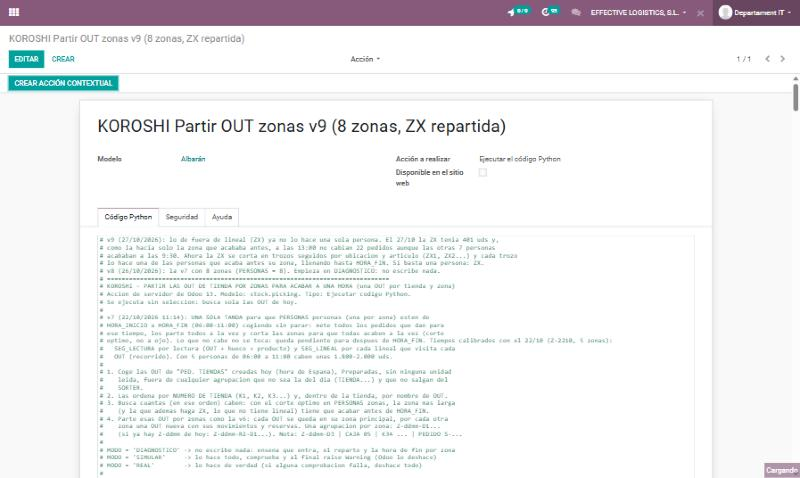
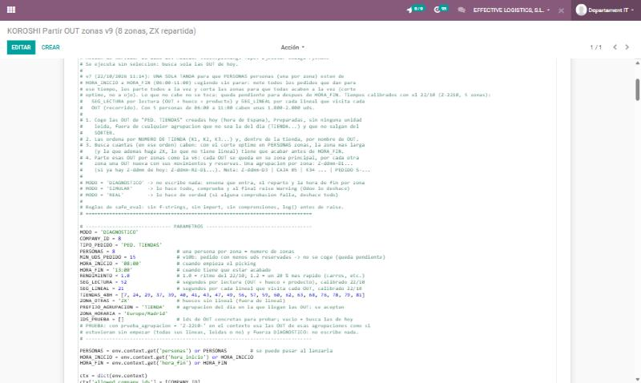
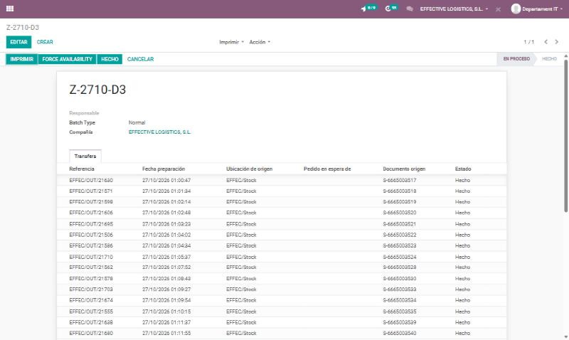
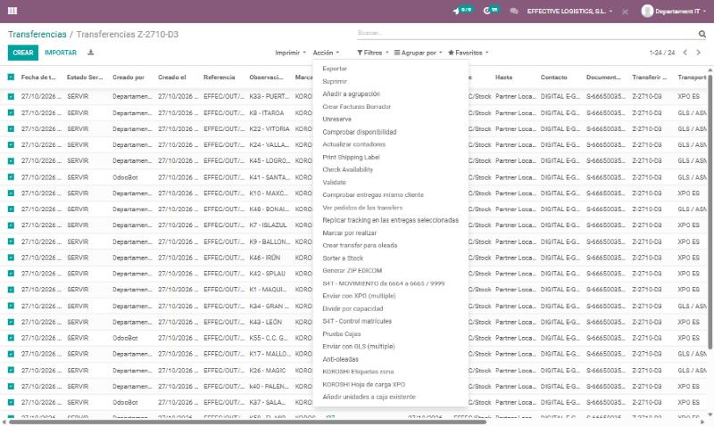
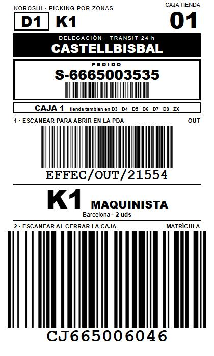
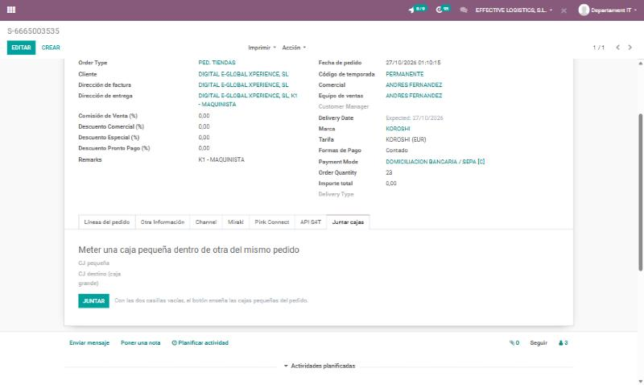
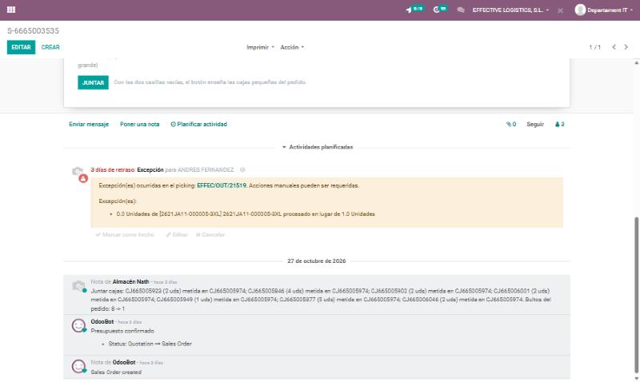

Cómo se parten los pedidos de tienda por zonas del almacén, cómo se etiqueta cada caja y cómo se juntan las cajas pequeñas de una misma tienda.
Ajustes › Técnico › Acciones › Acciones de servidor › KOROSHI Partir OUT zonas v9 (8 zonas, ZX repartida) (id 1866). Modelo Albarán, «Ejecutar el código Python». No hace falta seleccionar nada: busca sola las OUT de hoy.


| Parámetro | Valor | Para qué |
|---|---|---|
| MODO | 'DIAGNOSTICO' | DIAGNOSTICO = no escribe nada, solo enseña el reparto. SIMULAR = lo hace todo y lo deshace al final. REAL = lo hace de verdad. |
| PERSONAS | 8 | Una persona por zona = número de zonas. |
| MIN_UDS_PEDIDO | 15 | Pedidos con menos uds reservadas no se cogen. |
| HORA_INICIO / HORA_FIN | 08:00 / 13:00 | Cuándo empieza el picking y cuándo tiene que estar acabado. 'AHORA' = la hora actual. |
| RENDIMIENTO | 1.0 | 1.2 = un 20 % más rápido. |
| SEG_LECTURA / SEG_LINEAL | 52 / 21 | Segundos por prenda y por cada lineal que visita una OUT (calibrado el 22/10). |
| TIENDAS_48H | lista | Tiendas con tránsito de 48 h (salen marcadas). |
Ejemplo del aviso de DIAGNÓSTICO (30/10, con las OUT que quedaban sin empezar):
KOROSHI PARTIR OUT ZONAS v9 - DIAGNOSTICO Objetivo: 8 personas de 8:00 a 13:00 (300 min cada una) | ritmo x1.00 (52 s/lectura, 21 s/lineal por OUT) OUT validas: 23 (595 uds) | ENTRAN: 23 (595 uds) | no entran: 0 (0 uds) | saltadas 26 Acaba previsto: 9:30 (la zona mas larga) | agrupaciones Z-3010-<zona> Zona D1 | L2-L49 | 65 uds | 18 OUT (cajas) | ~66 min | acaba ~9:06 Zona D2 | L50-L67 | 94 uds | 18 OUT (cajas) | ~75 min | acaba ~9:15 ... Zona ZX | fuera de lineal | 35 uds | 19 OUT | ~27 min (la hace D6 al acabar la suya) Caja | tienda | OUT | pedido | uds por zona (* = se queda la OUT original) | sin reserva 01 K7 - ISLAZUL (48h) | EFFEC/OUT/22350 | S-6665003678 | D1:2 D2:3 D3*:8 D4:5 ... ... OUT nuevas que se crearan: 150 Saltadas (26): EFFEC/OUT/22339 (K33 - PUERTO VENECIA): esta en la agrupacion 30_10_26 ...

Cómo va cada zona se mira en el Monitor picking (ver su manual): matriz tienda × zona, tiendas listas para juntar y bultos.
Cada OUT de zona lleva su etiqueta de 4×6" (101,6 × 152,4 mm) en la Zebra. Sustituye al «Picking Sticker».


| Parte | Qué es |
|---|---|
| Arriba izquierda: D1 K1 | Zona y tienda. |
| Arriba derecha: CAJA TIENDA 01 | Sitio de la tienda en la mesa de juntar. |
| Delegación | Delegación del transportista y tránsito (24 h / 48 h). |
| Pedido | Número de pedido con su código de barras. |
| CAJA 1 · tienda también en… | Número de caja y otras zonas donde tiene OUT esa tienda. |
| 1 · Escanear para abrir en la PDA | Código de la OUT: se lee para empezar a coger. |
| K1 Maquinista · ciudad · uds | Tienda, ciudad y unidades de esa OUT. |
| 2 · Escanear al cerrar la caja | Matrícula CJ: se lee al cerrar la caja. |
Cuando una tienda tiene varias cajas pequeñas (una por zona), se meten dentro de una más grande. Se hace desde el pedido de venta de la tienda, pestaña Juntar cajas.

Cada vez que se junta, queda una nota en el pedido con lo que se ha metido en cada caja y cómo cambian los bultos:

| Paso | Quién | Dónde |
|---|---|---|
| 1. Partir las OUT por zonas (DIAGNÓSTICO y luego REAL) | IT | Acción 1866 |
| 2. Imprimir etiquetas de cada zona | Encargado | Transferencias › Acción › KOROSHI Etiquetas zona |
| 3. Coger cada zona con la PDA (leer OUT, prendas y CJ al cerrar) | Pickers | PDA |
| 4. Seguir el avance y ver qué tiendas se pueden juntar | Encargado | Inventario › Monitor picking |
| 5. Juntar cajas pequeñas | Mesa de juntar | Pedido › Juntar cajas |
| 6. Etiqueta XPO por tienda | Expedición | Como siempre |